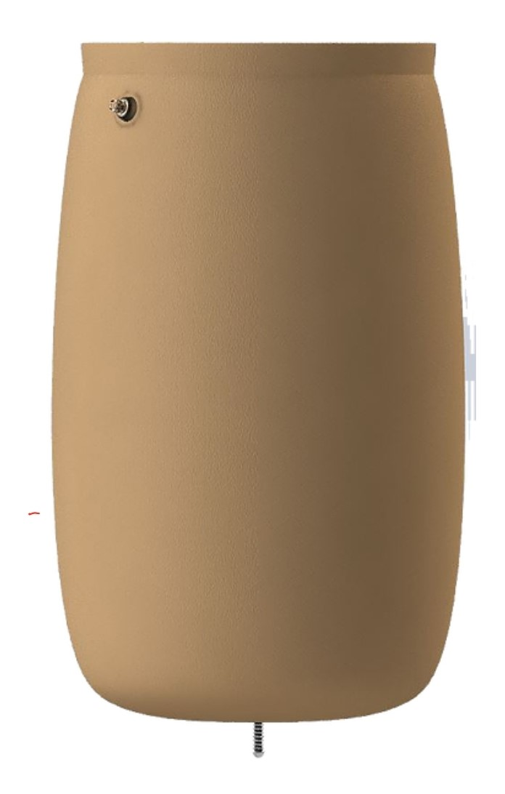

-

Deep Learning to Ultrasound Imaging
This project was completed as a part of research I did with the Pulse Lab at Johns Hopkins through the 2019 Leadership Alliance Summer Research Early Identification Program. Recently, rather than the traditional delay-and-sum beamforming method, deep learning is being explored as a way to create readable and segmented ultrasound images from raw ultrasound channel data. One limitation of this approach comes from the fact that this raw data must be "downsampled" for the network to train properly, which increases the likelihood for small cysts to be missed or mischaracterized. Using simulated cysts in a fully convolutional neural network developed by my lab, I tested different downsampling methods to see how accurately small cysts can be segmented. (This is a photo of me presenting this research at BMES 2019.)
-

Inflatable Socket for Transtibial Prosthetics
In my Introduction to Biomedical Engineering Design class, my team chose to come up with a design involving prosthetics. We decided that we wanted to develop an inflatable socket for transtibial prosthetics. Following amputations, the residual limb may fluctuate in size due to inflammation. Our inflatable design would allow the patient to adjust the fit of their own prosthetic to those fluctuations. Amongst many other responsibilities, I coordinated with a local Certified Prosthetist Orthotist to receive key feedback on our ideation and prototypes. To the left you can see our formal solidworks model of our design, and above one of my teammates is modeling our proof-of concept.